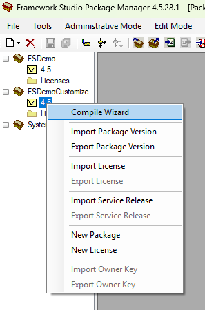
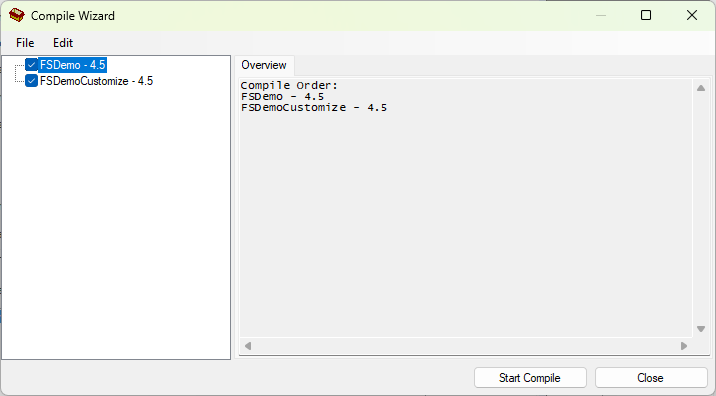

Compile Wizard
Der Compile Wizard ermöglicht das automatische Kompilieren eines Labels mit den davon abhängigen Labels. Alle Einstellungen für einen solchen Vorgang können gespeichert und wieder geladen werden. Außerdem lässt sich der Compile Wizard per Kommandozeilenparameter mit einer zuvor gespeicherten Konfiguration automatisch starten.
Warning
Es wird immer ohne Use saved code kompiliert.
Starten des Wizards
Der Compile Wizard wird über den Eintrag Compile Wizard im Kontextmenü eines Labels gestartet.

Im Compile Wizard werden auf der linken Seite in einem Treeview das ausgewählte Label und alle davon abhängigen Labels angezeigt. Wurzelknoten ist das ausgewählte Label. Alle davon abhängigen Labels werden auf der ersten Ebene dargestellt. Sind von diesen Labels wiederrum weitere Labels abhängig, werden diese auf einer weiteren Ebene dargestellt.
Im folgenden Screenshot ist zum Beispiel das Label CustomizingTestLevel2 1.0 abhängig vom Label CustomizingTest 1.0. Deshalb wird es (auch) als Unterknoten von CustomizingTest 1.0 angezeigt.

Im Treeview kann für jedes Label über die dazugehörige Checkbox festgelegt werden, ob dieses Label kompiliert werden soll.
Auf der rechten Seite werden daraus resultierend alle Labels in der Reihenfolge angezeigt, in der sie kompiliert werden.
Tip
Wenn man mehrere Labels (Versionen) desselben Packages hintereinander kompilieren möchte, kann man den Compile Wizard über das Kontextmenü des Labels SystemVersion vom SystemPackage öffnen. Es werden dann alle Labels angezeigt, da alle Labels von diesem Label abhängig sind.
Checkbox Refresh workspace of FrameworkCompiler before each compile
Wenn diese Checkbox gesetzt ist, wird der Workspace des FrameworkCompilers vor dem Kompilieren eines Labels für dieses Label aktualisiert.
Button Start Compile
Mit diesem Button wird der gesamte Kompiliervorgang gestartet. Tritt beim Kompilieren ein Fehler auf, wird der gesamte Kompiliervorgang unterbrochen.
Button Stop after this Label
Mit diesem Button kann der Kompiliervorgang zwischen den einzelnen Labels abgebrochen werden.
Einstellungen exportieren
Im Compile Wizard kann über den Menüpunkt File / Export Settings die aktuelle Konfiguration in eine XML-Datei exportiert werden. In dieser Datei sind die folgenden Informationen enthalten:
ConnectionString für den Zugriff auf das Repository (verschlüsselt)
Zu kompilierende Labels
Soll der Workspace vor dem Kompilieren aktualisiert werden?
Mit dieser XML-Datei ist es möglich, ein Kompiliervorgang für mehrere Packages / Labels per Kommandozeile anzustoßen
Einstellungen importieren
Im Compile Wizard können Sie eine gespeicherte Konfiguration über den Menüpunkt File / Import Settings importieren.
Start per Kommandozeilenparameter
Der folgende Aufruf startet den Package-Manager, öffnet den Compile Wizard mit den Einstellungen, die in der Datei Settings1.XML abgelegt sind und startet den Kompiliervorgang.
FrameworkStudioPackageManager.exe \compileXML "C:\Settings1.XML"
So ist es z.B. möglich den Package-Manager über einen geplanten Task zu starten und so das regelmäßige Kompilieren mit dem FrameworkCompiler automatisch durchzuführen. Idealerweise sollte dieser Vorgang am Abend gestartet werden, nachdem die Entwickler ihre Elemente in einem kompilierfähigen Zustand eingecheckt haben.